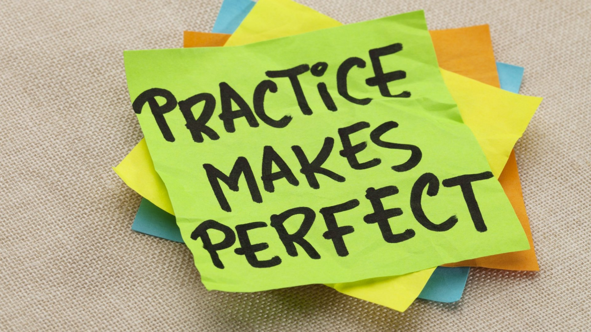

This is going to be my first experience with Javascript and I would say that I have been interested in it for quite a while, but never had the time to learn it. I was able to learn Java, C, and C++ prior to this with C being the main language I would write in.
What are my thoughts on Javascript so far? Well I would say that it is a bit of a relief from how I would always be on assignments that are restricted to C programming. Javascript and ES6 seem to hold a lot more shorthand methods and shortcuts that make my experience a lot less cluttered than I am used to. I think I had a much better time getting adjusted to javascript due to my smattering of knowledge of java and my more in-depth knowledge of C and C++. The whole ES6 portion of the tutorial was new to me and a nice look into what it had to offer. In the end, I think that Javascript might become rather fun and might become my preferred language to work in.

Athletic software engineering is something that I am not entirely used to as I usually try to make long periods of time for work with very little inbetweens. I also never really had an environment that encouraged hands-on learning during class periods which is usually delegated to our own hours. I think I might appreciate this method of learning as I was never tasked to program in such small bursts of time like this. The WODs are probably the best method of learning to me as I do start to forget things without constant practice. Even when this method can be stressful it really does get the gears turning much faster than when I have a prolonged deadline, which leads to it being rather enjoyable.